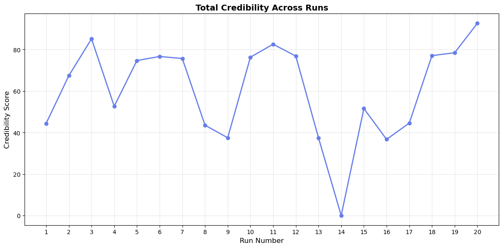

📈 Trends Over Runs
Credibility Score Progression
Credibility Distribution

Model: deepseek/deepseek-chat-v3-0324
Total Runs: 20
Generated: 2025-10-13 12:50:07
| Category | Run | Credibility | Perplexity | Quality Score | Functions | Syntax Valid | Executed |
|---|---|---|---|---|---|---|---|
| BEST | Run 20 | 92.66 | 1.16 | 99.5 | 20 | ✓ | ✓ |
| WORST | Run 14 | 0.00 | 1.15 | 48.5 | 0 | ✗ | ✗ |
The following runs have credibility scores more than 1.5 standard deviations from the mean:
Syntax Validity: 19/20 runs (95.0%)
Execution Success: 11/20 runs (55.0%)


| Run | Timestamp | Credibility | Perplexity | Quality | Functions | Classes | Lines | Complexity | Syntax | Executed |
|---|---|---|---|---|---|---|---|---|---|---|
| 1 | 2025-10-12 19:48:35 | 44.4 | 1.14 | 79.0 | 20 | 4 | 446 | 2.7 | ✓ | ✗ |
| 2 | 2025-10-12 19:49:53 | 67.4 | 1.17 | 83.0 | 30 | 17 | 242 | 2.4 | ✓ | ✓ |
| 3 | 2025-10-12 19:50:58 | 85.2 | 1.20 | 87.0 | 22 | 19 | 165 | 2.2 | ✓ | ✓ |
| 4 | 2025-10-12 19:51:51 | 52.7 | 1.17 | 85.0 | 24 | 23 | 153 | 1.9 | ✓ | ✗ |
| 5 | 2025-10-12 19:53:03 | 74.7 | 1.19 | 79.0 | 33 | 15 | 187 | 1.7 | ✓ | ✓ |
| 6 | 2025-10-12 19:54:12 | 76.7 | 1.18 | 80.5 | 34 | 13 | 211 | 2.2 | ✓ | ✓ |
| 7 | 2025-10-12 19:55:59 | 75.7 | 1.18 | 82.0 | 37 | 33 | 296 | 1.9 | ✓ | ✓ |
| 8 | 2025-10-12 19:57:01 | 43.5 | 1.20 | 76.5 | 14 | 5 | 210 | 2.0 | ✓ | ✗ |
| 9 | 2025-10-12 19:58:41 | 37.5 | 1.22 | 68.0 | 22 | 19 | 277 | 1.7 | ✓ | ✗ |
| 10 | 2025-10-12 19:59:46 | 76.3 | 1.13 | 82.0 | 22 | 13 | 192 | 1.4 | ✓ | ✓ |
| 11 | 2025-10-12 20:01:17 | 82.6 | 1.15 | 89.0 | 34 | 12 | 235 | 1.8 | ✓ | ✓ |
| 12 | 2025-10-12 20:02:59 | 76.9 | 1.15 | 81.0 | 31 | 24 | 262 | 2.1 | ✓ | ✓ |
| 13 | 2025-10-12 20:04:36 | 37.5 | 1.18 | 69.0 | 25 | 14 | 336 | 2.0 | ✓ | ✗ |
| 14 | 2025-10-12 20:07:12 | 0.0 | 1.15 | 48.5 | 0 | 0 | 473 | 0.0 | ✗ | ✗ |
| 15 | 2025-10-12 20:08:48 | 51.6 | 1.14 | 88.5 | 22 | 4 | 276 | 2.0 | ✓ | ✗ |
| 16 | 2025-10-12 20:10:20 | 36.7 | 1.17 | 69.0 | 18 | 4 | 240 | 2.2 | ✓ | ✗ |
| 17 | 2025-10-12 20:12:11 | 44.6 | 1.13 | 77.5 | 23 | 18 | 364 | 2.9 | ✓ | ✗ |
| 18 | 2025-10-12 20:14:01 | 77.1 | 1.19 | 79.0 | 63 | 51 | 341 | 1.6 | ✓ | ✓ |
| 19 | 2025-10-12 20:15:31 | 78.5 | 1.17 | 84.0 | 36 | 0 | 211 | 1.6 | ✓ | ✓ |
| 20 | 2025-10-12 20:16:24 | 92.7 | 1.16 | 99.5 | 20 | 1 | 129 | 1.8 | ✓ | ✓ |
Generated by Model Comparison Tool